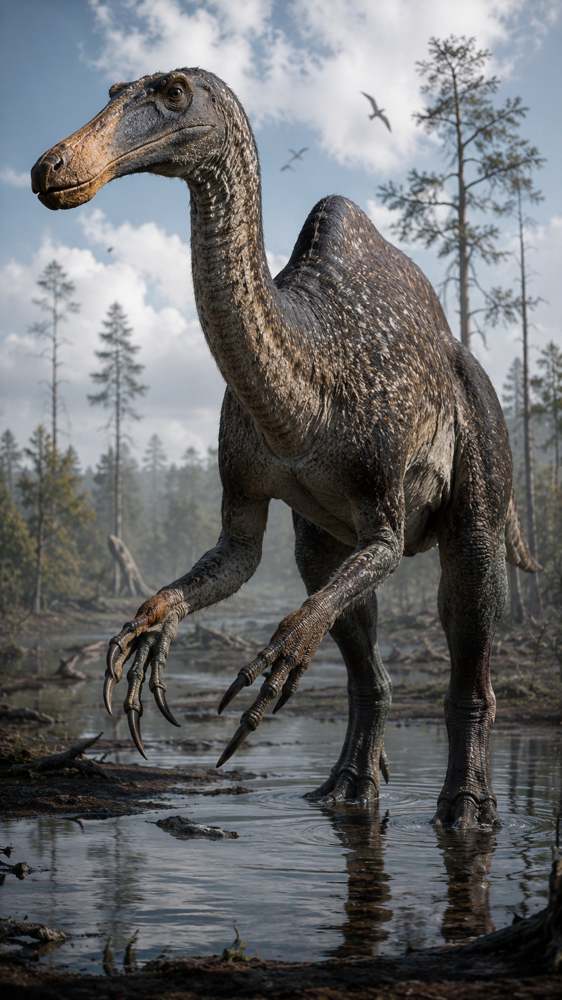
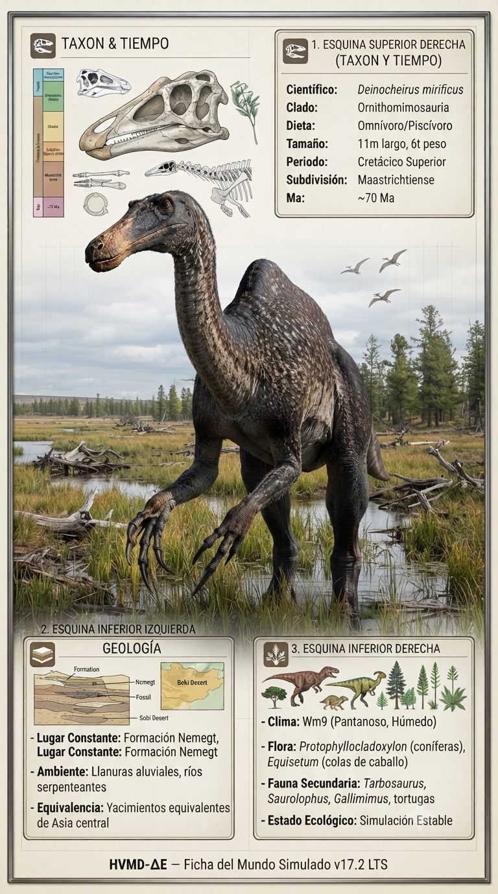
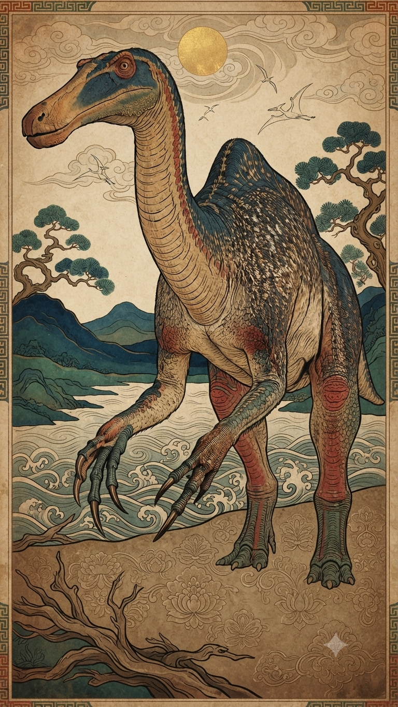
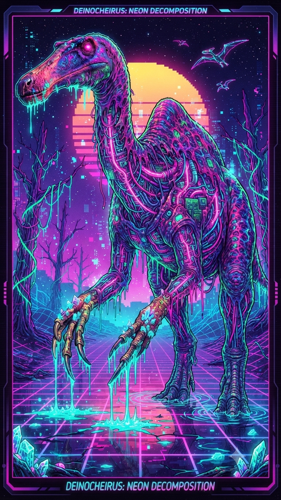

Paleoficha de PalEntropía




TAXÓN:
Deinocheirus mirificus
CLADO:
Ornithomimosauria (Deinocheiridae)
DIETA:
Omnívoro/Macrófago; consumía plantas acuáticas, peces y pequeñas presas.
TAMAÑO:
Hasta 11 metros de longitud y unas 6,5 toneladas de peso.
LOCOMOCIÓN:
Bípeda; patas posteriores robustas y enormes brazos provistos de largas garras.
TIEMPO:
Cretácico Superior, aproximadamente hace 70 millones de años.
GEOGRAFÍA:
Cuenca de Nemegt, Asia central.
EQUIVALENCIA PALEOGEOGRÁFICA:
Llanuras aluviales con ríos caudalosos y abundante vegetación palustre.
AMBIENTE PALEAOECOLÓGICO:
Tierras bajas fluviales con marcada alternancia entre estaciones húmedas y secas.
ECOLOGÍA:
• Flora: Bosques de galería con coníferas y abundantes plantas acuáticas en los cauces fluviales.
• Fauna secundaria: Rica comunidad de dinosaurios de la Formación Nemegt, junto a cocodrilomorfos, tortugas y peces.
• Nichos: Megaomnívoro de ambientes ribereños. Su gran joroba dorsal, el ancho pico aplanado y la presencia de gastrolitos indican una dieta muy variada basada en vegetación, peces y pequeños animales capturados en los márgenes de los ríos.
• Relaciones: Deinocheírido gigante que evolucionó de forma independiente respecto a los ornitomimosaurios corredores, desarrollando un cuerpo masivo y adaptaciones convergentes con grandes herbívoros.
CLIMA:
Wm24 (Cretácico semiárido). Temperaturas cálidas con fuerte estacionalidad hídrica que concentraba la fauna alrededor de los grandes sistemas fluviales.
ESTADO ECOLÓGICO:
Estable. Deinocheirus representa uno de los ejemplos más espectaculares de convergencia evolutiva entre los dinosaurios terópodos, ocupando un nicho ecológico único como gigante omnívoro de humedales.